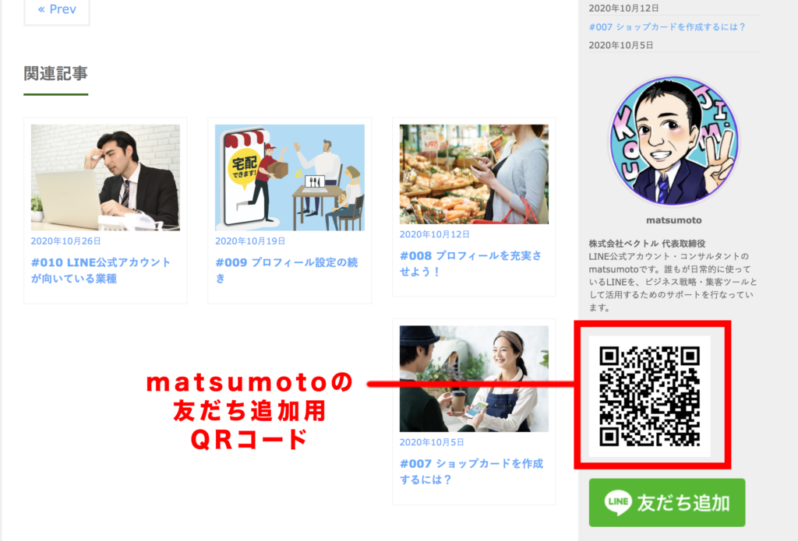

#011 LINE公式アカウントをオススメしてみた

こんにちは！matsumotoです。今日は、LINE公式アカウント（以下、LOA）のコンサルタントであるmatsumotoが、あるクライアントにLOAをオススメした時の経験を語ってみます。
初めてのお客さまにLINE公式アカウントを紹介してみた
まず、初めて出会ったクライアントにどうすればLOAを活用していただけるのか。これはもう本当にどれだけLOAがクライアントにとって有益であるか、というプレゼンをしっかりできるかどうかに尽きます。自分自身がLOAについて充分知識を持っているのはもちろんのこと、それをお客さんの会社やお店でどのように活用できるかまでイメージした上で、どれだけ魅力を語れるか。いわゆる「営業力」とかにつながる話なのかなと思います。
カフェだったら絶対活用するべき！
最近、カフェをオープンしたい！という方に仕事でお会いました。LOAのことなんて何も知らないそうで、でも僕は立場上絶対にLOAをおすすめしたい！という状況です。だって、実際にお客さんが来る実店舗を立ち上げるのに、LOAを使わないなんて絶対損じゃないですか！ 前回のブログでも説明した通り、お客さんが訪れるお店を経営するのに、LOAを活用しないなんてもったいなさ過ぎます！ お店にくるお客さんにお得感を感じてもらい、何度でもお店に来ていただける、そんなことを実現するのにLOAは最適なツールであることは明らかです。
なかなか伝わらない…
しかし、その方にLOAで出来ることを説明するのがなかなか大変でした（汗）。そもそも、「LINEなんてほぼ使ったことない。SNSもやってない」といういわゆる「オジサン」にどう説明すればいいのか？と、matsumoto自身も頭を抱え込んでしまいました。今の世の中、人々がどれだけLINEを使ってコミュニケーションしてるのか、そんなとこから話してたら、いつまでたってもLOAの話ができない！ でも、それを飛ばしてはLOAの活用方法なんて伝えられない。葛藤しました。どうやったら、この人にLOAの魅力を理解してもらって、友だち追加に励んでもらえるのか？？？ 正直、今日時点でまだまだそんなに理解してもらえていないと思います。でも、伝え続けるしかないんです。そこだけはわかってました。
クーポン機能を理解してもらえた！
その方は、お店の不動産契約やら設計図面やらスタッフ募集やら、本当にすごく忙しそうで、なんだかLOAをおすすめするのもはばかられるような激務っぷり…。でも、LOAにもちゃんと魅力を感じてもらわないと、matsumotoも仕事になりません。そういう訳で、打ち合わせでお会いするたび、少しずつ一生懸命伝えてきました。その結果！ひとまず「クーポン機能」について理解していただき、「じゃぁそれやろう！」となりました。matsumoto的には、「ヨシッ！」です！「クーポン機能を活用いただくために、お店のQRコードを常に持ち歩いてください。会う人みんなに、友だち追加してもらってください」とお伝えしました。まだQRコードは持ち歩いてもらってませんが、名刺サイズのカード（紙）を作って、持ち歩いてもらう予定です。
タイミングは何より大事

友だち追加は、タイミングが大事！ いつどのタイミングでそういう時が訪れてもいいように、HPを作ってそこにQRコードを載せておいたり、QRコードをカードにして持ち歩いてもらって、いつでもどこでも友だち追加してもらうタイミングを逃さないように！と念を押しました。（QRコード＝スマホで読み込んでもらって、友だち追加してもらう為のツール）お店がオープンしたら、レジ横にQRコードを表記したPOPを設置していただき、お店に来てくださったお客さまみんなに友だち登録してもらう。その導線がいかに重要であるか、それをどう伝えるかがコンサルタントの腕の見せ所です！
伝え続けることの大切さ
僕自身、なかなか初めて会った人にその場で友だち追加してもらうのは難しいと感じてますが、それでもLOAの価値を伝え続けることが大事だと思っています。それには、時間もかかるし、場合によってはお金もかかるかもしれません。でも、LOAの魅力を知ってもらい、実際にお店がLOA活用によって潤ってくれれば、僕自身も幸せだしお客さんから信頼いただくこともできます。この信頼っていうところが大切で、「この人に頼めば大丈夫！」と信じていただければ、僕自身仕事が途切れることもなくリピーターゲット！ということにつながります。お互いウィン・ウィンでしかないこの信頼関係を築くことの尊さ！
最後に
以上が、matsumotoが初めてのお客さまにLOAをおすすめしてみた！という体験談です。LOAを活用してもらうには、諦めずに何度でも魅力を伝え続ける、ということに尽きる、と実感しました。相手にどのようにアプローチするか、そこは自分の努力次第なんだと思います。これからも、あなたのお役に立ちます！ということを皆さんにお伝えし続けるべく、頑張っていこうと思います！！
まずはLINE公式アカウントを開設しましょう！
●LINE公式アカウントの開設方法はこちら
●LINE公式アカウントをオススメする理由はこちら
●LINE公式アカウントでできることはこちら
●Lステップでできることはこちら